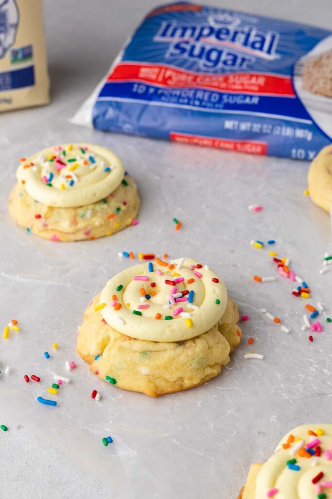
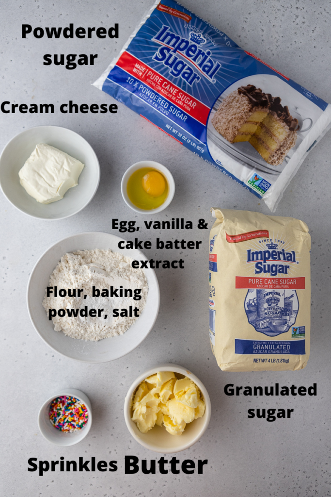

Crumble Cake Cookies

Here are the ingredients you will need to make this frosted funfetti cookie recipe. Make sure to scroll down to the recipe card for the full detailed ingredient measurements.
It is made with a thick cake batter flavored sprinkles sugar cookies, then topped with a smooth and creamy homemade cream cheese frosting. It is then finished with as much or as little sprinkles on top as your heart desires. These cookies are very quick to make and will be your favorite.
Ingredients
- Butter
You can use either salted or unsalted butter for the cookie but opt for unsalted butter for the frosting.
- Granulated sugar and powdered sugar
- Egg
The egg is the binding agent in this recipe, make sure to use an egg at room temperature.
- Cake batter extract
Since we are going for a birthday cake cookie, the cake batter extract will help mimic that flavor. You can find cake batter extract at your local grocery store or online.
- Flour
- Baking Powder
- Salt
- Sprinkles
- Cream Cheese
- Heavy Cream

Steps for the cookies
- Cream the butter, granulated sugar and powdered sugar together until creamy
- Add in the egg, vanilla extract, and cake batter extract and mix to combine
- Fold in the flour, baking powder, and salt until combined.
- Mix in the sprinkles,as much or as or little as you want.
- Scoop out equally sized cookie dough balls, place them on the prepared baking sheet, and bake them in the preheated oven.
Steps for the frosting
- Cream the butter and cream cheese together until smooth
- Add in the powdered sugar, cake batter flavoring and vanilla and mix until fluffy.
- Frost the cookies with a piping bag and a large round tip or a ziplock bag with the tip cut off.
- Top with extra sprinkles and enjoy!